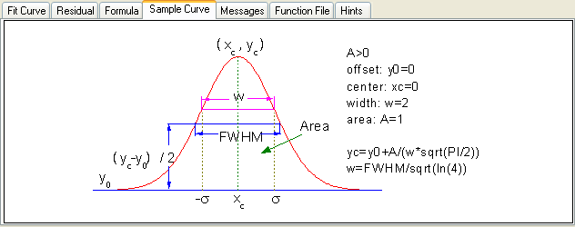

<h1 class="firstHeading">Die Registerkarte Beispielkurve (Unteres Bedienfeld)</h1>

  <p>Die Registerkarte <b>Beispielkurve</b> zeigt Modell, Kurve und Parameter/Variablen.</p>

  <dl>
    <dd></dd>
  </dl>
